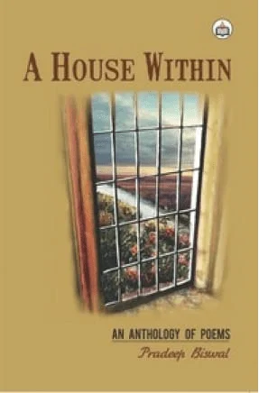
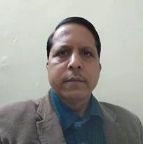

Chasing the Shadow :
It was past noon
The shadow emerged
Suddenly
From nowhere
And walked ahead
The sun was intemperate
Where did the road
Lead to (?)
Death or salvation
Nobody had an idea
The shadow outpaced me
Looked longer
I felt loneliest
A bunch of grief
Pinned down my steps
I retreated back
But the shadow
Kept me following
Till I melt in the air
Like bubbles
And disappeared
In the oblivion.
↑ ContentsA Poet Has No Land :
A Poet has no land
No borders
No barriers
Of nationality
Caste creed
And colour.
He knows
Blood is red
No matter
What you are.
Love is life
Life’s love
For him
Always.
Love blooms
Like flowers
All the seasons
Say it spring
Autumn
Or winter
Life’s beautiful
Each moment.
He wages war
Against all those
Involved in
Bloodshed
Genocide
Crime against man.
He’s the ambassador
Of peace
And humanity
Love and compassion
Beyond borders
Dividing the globe.
↑ ContentsTHE WALL :
Pradeep Biswal
It’s made of mud
Or brick and cement
At times plastered with mosaic
Some decorated with mirrors
Or painted with colours
The tapestry
Looking brightly vivid
But wall remains a wall
Against all odds
And fear of loss.
Nothing penetrates
Beyond the wall
The cryptic questions
Go unanswered.
Back to the wall
You fight with the enemies
Regardless of the outcome
May come out with a V sign
Or get vanquished
At the end.
The wall expands
In all directions
The meadows
The horizon
The sky
Come closer
Distance disappears
The wall appears invincible.
↑ Contents
Pradeep Biswal's A House Within :
'The state of Orissa', writes M.K Naik in 'Indian English Poetry: from the beginnings upto 2000,' is generally considered to be one of the backwaters of the modern Indian English literature scene'. In addition to Jayanta Mahapatra, Prabhanan K. Mishra, Bibu Padhi, Niranjan Mohanty, Rabindra K. Swain, Pravat Kumar Padhy etc., Orissa has produced a large no of other powerful poetic voices as well. One such Orissan voice is Pradeep Biswal, a distinguished poet writing in English and Odia with equal ease.
With five anthologies of poetry in Odia and two collections of poems translated into Hindi, Pradeep Biswal has come up with A House Within as his first anthology of poems in English. All the poems as showcased in this colle ction revolve around life in all its shades, love, nature, divinity and spirituality. Most of them are of contemplative and introspective strain. Various facets of life, in fact, find their full expression in his poetry. "Flow of emotions makes h is poetry meaningful and capable of touching the heart of the reader' as he avers in his Preface. He opines that "poetry must convey an inner feeling in whichever way it may be through images, words, metaphors and myths.' we find a proper amalgamation of all these elements in his poetry.
Biswal’s poetry is marked by the apt description of nature, hence a major preoccupation for the poet to put his thought across. Floods, woods, mountains, rivulets, sky, rays, rainbows, clouds - all make him observant and enjoy the beauty of nature as it contains the ‘whole universe'. Frankly speaking, it is the persistent use of images, mostly drawn from the natural world that makes his poetry more appealing and enjoyable. Even the ordinary phenomena are expressed in an extraordinary poetic excellence.
His poem "The Wild Flower" is a brilliant expression of looking at life with the telescope of nature to realize its hugeness and importance. As a poet of nature, he is aware of inherent power- aesthetic, mystical and spiritual- of nature. He remarks:
A tiny flower
I plucked from the wood...
I held it in my hands
Watched it closely
It's soaked with morning dew
The bright rays of the dawn
Beauty of the rainbows
Mysteries of the divine.
A mere tiny flower
It contains the whole universe.
His poetry evidently exhibits a correlation between life and nature. In the poem “The Art of Living", he stresses the art of living with zest and zeal and facing the external challenge of the life as he firmly believes in rising after the fall-
Fire spreads across
The hilltops.
Still green leaves
Sprout again
On the branches
A new life germinates
Inside the womb.
With stirring imagery amply and aptly employed he further highlights the guts of the people through the portrayal of the life and people of a tribal hamlet of Odisha, in the same poem-
The morning sun shines
Atop the mountain
Everyone forgets
The bad dreams
Of the previous night
Years of catastrophe
By the blessings
Of the unseen
They know well
How to live the life
On their own.
"In the Twilight Zone", "The Rainbow in the Evening", "While Clouds Descend", It's Raining Today", "Spring has Arrived", "A Flower Bloomed" are some of remarkable poems dealing with astounding aspects of nature , thus showing the rapport between man and nature.
The poet has exploring eyes on contemporary issues also. It is not that he is carried away by the beauty of nature from the realities of the world. He is vehemently critical of the modern malaise. "The War Never Ends" is a pathetic poem dealing with the theme of unending war. He makes a caustic remark:
The war never ends
Without blood splashing the streets
The corpses littering the lanes
And women sacrificed
On the altar of masculine pride.
They're the first casualties
In any war
Waged in history
The mutilated breasts
Staring at the sky
Biswal is essentially a poet of love and nature. Besides nature, elements love and longing pervade in his poetry, with some layers to be decoded. He does not color his love with artificial decoration. His is simple expression. The theme of love is well contained in the poems "Between Us", "Manorama's Eyebrows", " In Love Again", " Dreams Again", " When We Met" etc. .
The poem "Between Us" describes the ' barrier' of loneliness and silence of the lovers. However, despite the barrier of time, river, wall etc the feels the intensity of love even in separation. He croons-
We in two distinct
Different zones
..........................
But somewhere
A melodious symphony
Spreads its wings
Like a morning breeze
That touches
Our hearts and souls
And we intensely long
For each other
Next poem " I Know it Well" is a beautiful wooing of the poet who asks his beloved to ' come, rest your head/ on my shoulder'. With a promise to balm her 'aching wounds' he proclaims:
I can bear your burden
And carry you
To a distant planet
To save you
From the prying eyes
Of your dreaded enemies.
In some of his love poems, he very skillfully demonstrates his take on life and world. For instance, in the poem "When We Met", he talks of life caught in the whirlpool of uncertainties and un predictabilities. In the concluding stanza he philosophizes human predicament:
Life is juxtaposed
Between reality
And illusions
We never know
What is what
He calls the world 'weird’. His helplessness and bewilderment at the way of the world can be felt in the following lines of the poignant poem “In Mourning":
The empty cup
Stares at me
Where to find solace?
Shades of my life
Turn grey
With passing of time.
The titular poem “A House Within”, one of the most remarkable poems, sums up the poetic credo of Biswas whose nuanced expressions deserve to be taken into serious account. The poem is a beautiful manifestation of his existential experiences and philosophical profundity. After describing the outward panorama, he turns inward as a man of realization. He remarks:
Each house
Has many houses
Within it
Each having
Its doors windows
Dreams and despair.
The ‘house’ here is a metaphor and symbol. Then he puts across the quintessential thought and outlook on life:
Each house has
Its lights and shadows
Few dark corners
An air of its own
Each house
Is divided within
In addition to love and nature, melancholy, silence and dreams also permeate in Biswal’s poetry. As a suggestive father, he has written one or two poems for his son. “Where are You Now?” expresses his angst and complaint against his country which he finds nowhere now-a- days:
Where are you Bharat?
For days together
Neither in newspapers
Nor in periodicals
I come across you.
You were no there
Among the black flag
Demonstrators
In the capital.
Towards the end of the poem he makes a request to his nation to address a series of prevailing issues including the grievances of farmers, pensioners, famine, and other state of affairs:
Come Bharat
Come sometime
We have many more
To discuss.
In a nutshell, Biswal’s poetry is enjoyable and notable for his deft handling of words and stirring imagery, his vivid diction and wide range of themes, dealt with simplicity and precision. All his poems, as Dr. Bhagaban Jayasingh has rightly remarked in Foreword, are simple and ‘plain’….; they are not labored, brittle or superficially witty’.
↑ ContentsPradeep Biswal (India) :

Pradeep Biswal (1960) is a bilingual Indian poet writing for four decades. He has two poetry collections in English and six in his native language ‘ Odia’. Two volumes of his poems translated into Hindi have also been published. His poems have been published in many international anthologies and journals of repute.
He is also an editor and translator of eminence.
↑ Contents